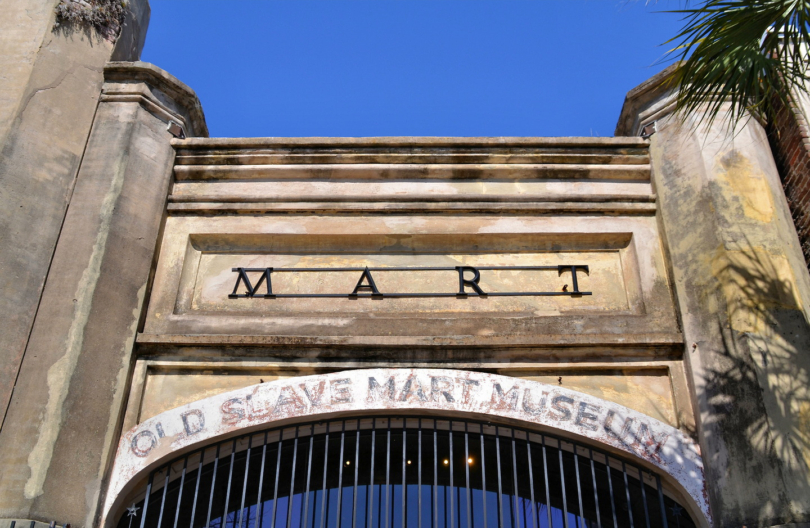
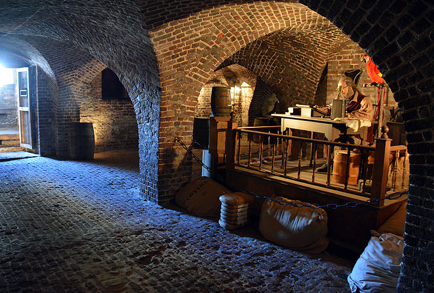

A Journey Through Time
Charleston, South Carolina, boasts a rich history that dates back to its founding in 1670. Initially established as Charles Town, the city quickly became a vital port and a center of trade, particularly for rice and indigo. Its strategic location made it a key player during the American Revolution and later the Civil War, with Fort Sumter marking the conflict's first shots. The city’s cultural tapestry is woven from African, European, and Indigenous influences, reflected in its architecture, cuisine, and traditions. Charleston is known for its vibrant arts scene, historic preservation efforts, and annual festivals like Spoleto Festival USA, which celebrates performing arts. The city’s antebellum mansions, lush gardens, and rich Gullah heritage contribute to its unique charm, making Charleston a captivating blend of history and modern Southern culture

History Loves Visitors
Charleston was founded in 1670 as Charles Town, honoring King Charles II, at Albemarle Point on the west bank of the Ashley River (now Charles Towne Landing) but relocated in 1680 to its present site, which became the fifth-largest city in North America within ten years. It remained unincorporated throughout the colonial period; its government was handled directly by a colonial legislature and a governor sent by Parliament. Election districts were organized according to Anglican parishes, and some social services were managed by Anglican wardens and vestries. Charleston adopted its present spelling with its incorporation as a city in 1783. Population growth in the interior of South Carolina influenced the removal of the state government to Columbia in 1788, but Charleston remained among the ten largest cities in the United States through the 1840 census. Charleston's significance in American history is tied to its role as a major slave trading port. Charleston slave traders like Joseph Wragg were the first to break through the monopoly of the Royal African Company and pioneered the large-scale slave trade of the 18th century; almost one-half of slaves imported to the United States arrived in Charleston. Although this part of Charlestons history is dark and full of despair, it is what created the diverse melting pot that Charleston is today. Much of this depraved part of history can be witnessed through museums and landmarks put in place to remember the history and to remind visitors of the sacrifices made by those affected by the slave trade. In 2018, the city formally apologized for its role in the American slave trade.
